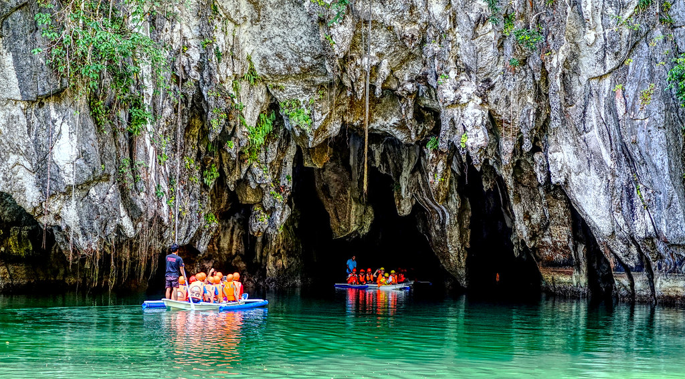

Banaue Rice Terraces

Chocolate Hills
The majestic Chocolate Hills is one of the Philippines' most popular tourist attractions and is the top destination for Bohol tours. It got its name from its strange yet unique formation and rich vegetation that turns into chocolate brown during the dry months.
The Chocolate Hills are a geological formation in the Bohol province of the Philippines. There are at least 1,260 hills but there may be as many as 1,776 hills spread over an area of more than 50 square kilometers. They are covered in green grass that turns brown during the dry season.

Manila Ocean Park

Mayon Volcano
El Nido, Palawan

Underground River, Palawan

Boracay